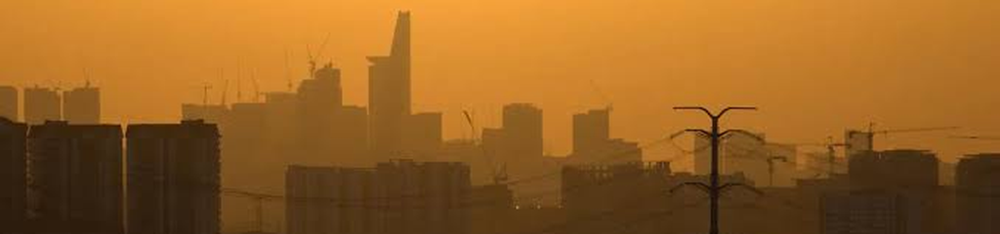
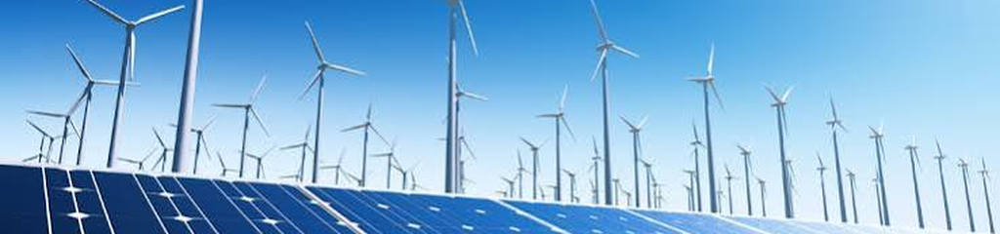
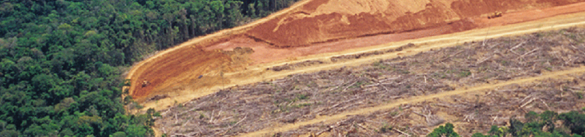
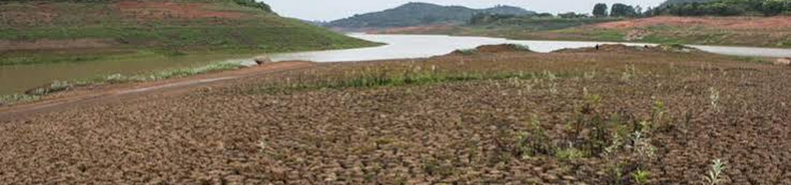
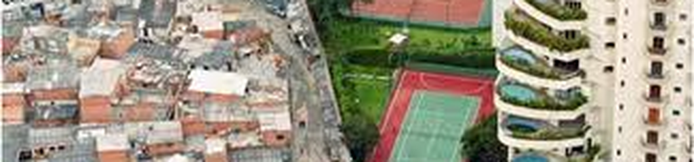
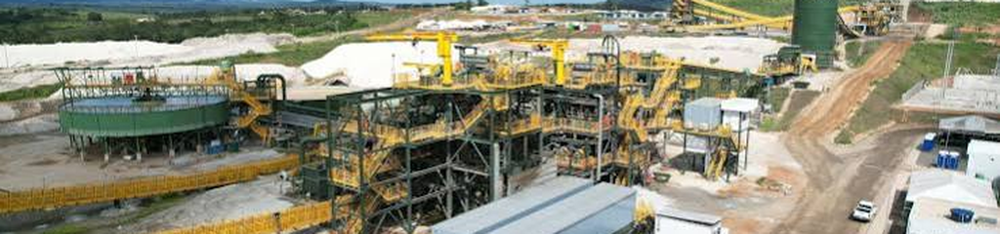
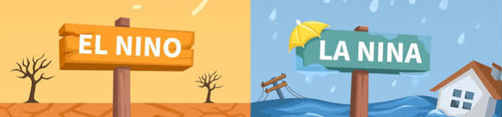
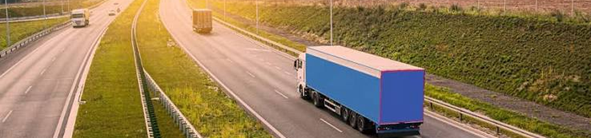
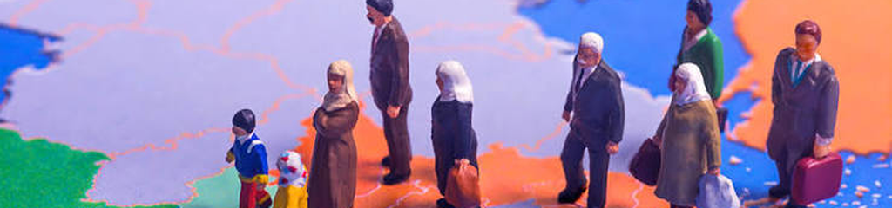

A Geografia é a ciência que estuda o espaço geográfico e a relação entre a sociedade e a natureza. Ela analisa tanto os aspectos físicos do planeta — como clima, relevo, vegetação e hidrografia — quanto os fenômenos humanos, econômicos e políticos, incluindo urbanização, população, geopolítica e impactos ambientais.
O que é Geografia?
Notícias de Geografia
Voltar para Disciplinas Ir para Sociologia
02. Avanço das Ilhas de Calor nas Grandes Metrópoles (Geografia)
A falta de áreas verdes e o excesso de asfalto elevam temperaturas urbanas.
Ler detalhes
04. Transição Energética e o Crescimento da Energia Solar no Brasil (Geografia)
O papel da matriz energética limpa na redução de emissões de carbono.
Ler detalhes
06. Desmatamento na Amazônia e os Impactos nos Rios Voadores (Geografia)
Como a perda florestal altera o regime de chuvas no Sudeste e Centro-Oeste.
Ler detalhes08. Geopolítica dos Semicondutores na Economia Global (Geografia)
A disputa estratégica entre potências pela produção de microchips.
Ler detalhes
10. Crise Hídrica e o Uso da Água na Agropecuária Brasileira (Geografia)
Desafios da gestão sustentável dos recursos hídricos no país.
Ler detalhes
12. Urbanização Acelerada e o Crescimento das Favelas (Geografia)
Os efeitos históricos da falta de planejamento urbano no Brasil.
Ler detalhes14. Blocos Econômicos: O Futuro do Mercosul e União Europeia (Geografia)
Entraves ambientais e comerciais nas negociações internacionais.
Ler detalhes16. Envelhecimento Populacional e a Mudança na Pirâmide Etária (Geografia)
Os impactos demográficos na previdência e no mercado de trabalho brasileiro.
Ler detalhes
18. Mineração de Lítio no Vale do Jequitinhonha (Geografia)
O potencial econômico do mineral essencial para baterias de carros elétricos.
Ler detalhes
20. El Niño e La Niña: Os Efeitos Climáticos no Brasil (Geografia)
Como o aquecimento do Oceano Pacífico provoca secas e enchentes.
Ler detalhes
22. Logística e Infraestrutura de Transportes no Brasil (Geografia)
A dependência do modal rodoviário e os custos para a economia nacional.
Ler detalhes
24. Fluxos Migratórios Internacionais e Crises Humanitárias (Geografia)
As causas econômicas e climáticas dos deslocamentos populacionais no século XXI.
Ler detalhes